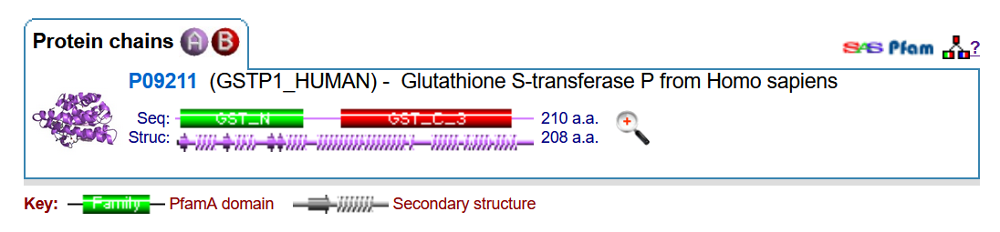
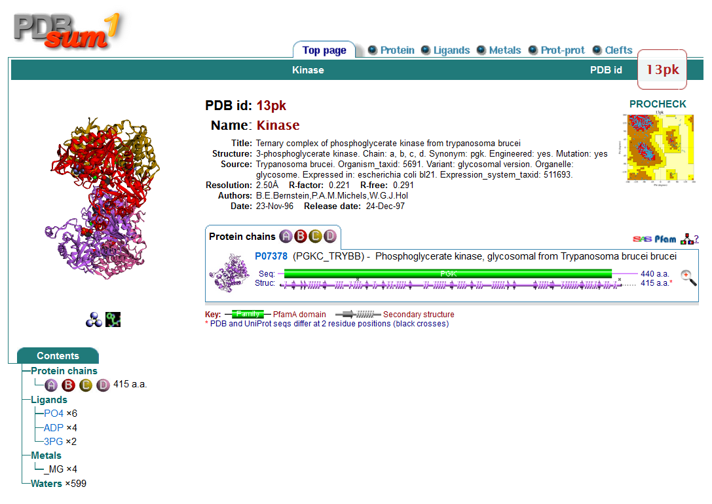
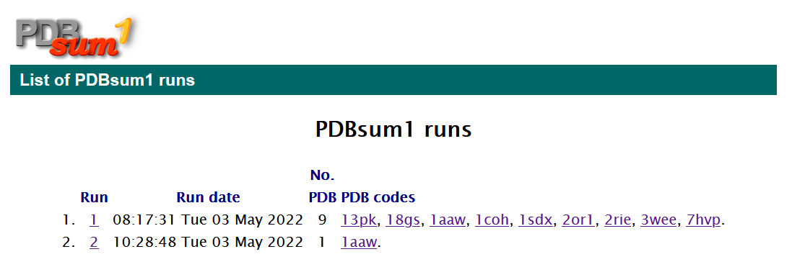
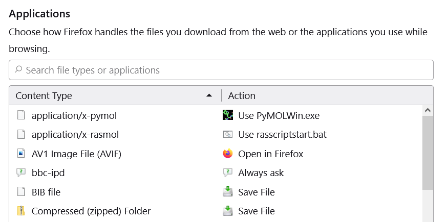
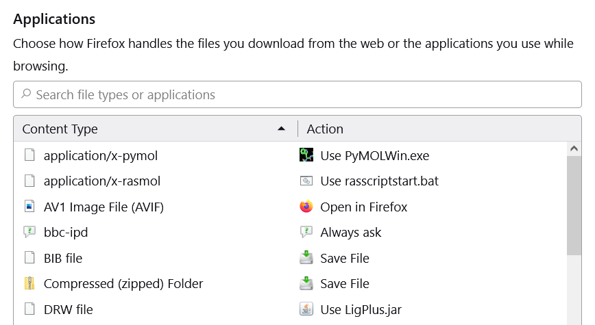

|
PDBsum1 Operating ManualRunning PDBsum1PDBsum1 is run from the command line.Before you can run it, you need to create an environment variable called CATHPARAM that points to the file: pdbsum1/params/CATHPARAM. This is the file you edited during installation (see Installation Instructions). Defining the CATHPARAM environment variablea. LinuxIn linux, CATHPARAM is defined via the command:setenv CATHPARAM [fullpath]/pdbsum1/params/CATHPARAMwhere [fullpath] points to the location of the PDBsum1 programs. If you use the bash shell, you need to use the command: export CATHPARAM=[fullpath]/pdbsum1/params/CATHPARAM b. MacFor macs, the command is the same as for the linux bash shell above:export CATHPARAM=[fullpath]/pdbsum1/params/CATHPARAM c. WindowsUnder Windows, the CATHPARAM environment variable is defined from the Command Prompt by:setx CATHPARAM "[fullpath]\pdbsum1\params\CATHPARAM"This will set CATHPARAM to this value every time you open a new Command Prompt window, but will not set it in the current window. To set it for the current window, enter: set CATHPARAM=[fullpath]\pdbsum1\params\CATHPARAM Setting up an alias for pdbsum1To make your life easier, you can set up an alias so that typing pdbsum1 will run the program without you having to enter the full path to the appropriate executable directory.a. LinuxIn linux, you can do this by:alias pdbsum1 [fullpath]/pdbsum1/exe_linux/pdbsum1where [fullpath] points to the location of the PDBsum1 programs. If you use the bash shell, you need to use the command: export pdbsum1='[fullpath]/pdbsum1/exe_linux/pdbsum1' b. MacOn macs, the command will depend on whether you have the bash or the Z shell. To tell which one you have, type:echo $0For bash, the command is as for the linux bash shell above: export pdbsum1='[fullpath]/pdbsum1/exe_mac/pdbsum1'For the Z shell, use: alias pdbsum1='[fullpath]/pdbsum1/exe_mac/pdbsum1' c. WindowsUnder Windows, the easiest option is to add the exe_win directory to your %PATH% parameter as follows:set PATH=%PATH%;"[fullpath]\pdbsum1\exe_win" Saving the environment variablesAs the CATHPARAM and pdbsum1 variables need to be defined as above in each window you open, you will find it convenient to have them automatically set up.This is done by adding the relevant commands to your .cshrc, .zshrc, .bashrc, or autoexec.bat file - whichever is appropriate for your operating system (ie linux C shell, Z shell, bash shell, or Windows, respectively). For example, for windows, you would create a file called C:\autoexec.bat in the C:\ directory containing the following lines: setx CATHPARAM "C:\pdbsum1\params\CATHPARAM"After creating this file you may need to reboot your windows machine for the settings to take effect. Check that all is OK by opening a new window and typing: pdbsum1. This should give the message:
Usage is:
pdbsum1 {file [pdb_code] | -l dataset.lst} [-nomaxchn] [-relinks] [-help]
where
* file = Name of single PDB file to be processed
* pdb_code = Optional 4-character identifier
* -l dataset.lst = Name of file listing PDB files to be processed
* -nomaxchn = Clefts to be generated even if more than 4 chains in structure
* -relinks = Make all image links relative (if directories to be moved)
Running the programThere are two ways of running the program:
pdbsum1 filename -nomaxchnNote that, on Windows, you may see new windows popping open and then closing as the program runs. This is fine. If you accidentally click on one of these and the windows freezes, just press RETURN and the program should resume. PDB codesEach PDB file processed is identified by a 4-character 'PDB code'. If the name of your file is of the form:pdbXXXX.ent or pdbXXXX.pdbthe program will use XXXX as the PDB code. Alternatively, you can assign a PDB code when you run the program by: pdbsum1 filename XXXXwhere XXXX is the PDB code. When using the dataset.lst file to run on multiple PDB files, you can assign individual PDB codes in the file as follows: /nfs/data/pdb/3p/pdb13pk.ent.gz pdb1 /nfs/data/pdb/8g/pdb18gs.ent.gz pdb2 /nfs/data/pdb/aa/pdb1aaw.ent.gz pdb3 /nfs/data/pdb/co/pdb1coh.ent.gz pdb4 /nfs/data/pdb/sd/pdb1sdx.ent.gz pdb5 /nfs/data/pdb/or/pdb2or1.ent.gz pdb6where pdb1, pdb2, etc, are the PDB codes. If the program cannot identify a suitable code from your file name, and no code is supplied as described above, it will automatically generate a code starting from a001, a002, and so on. PDB file formatThe file(s) you run should be in correct PDB format. This is defined in: PDB file formatSome docking and molecular modelling programs fail to adhere to this format. PDBsum1 tries to correct certain types of errors (eg missing chain identifiers, duplicate atom names, incorrect base names), but may not catch them all. If the programs fail to run correctly, you may need to check the file format. You will find it useful to make sure the file contains a TITLE and a DBREF record, as described below. a. TITLE recordYou can use this record for the name of the protein. This will appear on the PDBsum1 results page and will help identify different structures if you have processed many. The format of this record is given in: TITLE recordb. DBREF recordThis record can tell PDBsum1 what the UniProt accession code of your protein is. The program will then obtain the Pfam domains and generate a domain diagram like this: Figure 1. Pfam domains for the given UniProt sequence and PDB structure's coverage. The format of the record is given in: DBREF record ResultsThe results of the PDBsum1 run are listed in the index.html in your PDBsum1 results directory - as defined in the PDBSUM1_RESULTS_DIR parameter in your CATHPARAM file (see Installation instructions).The results page will look like (a) or (b) below depending on whether you ran on a list of PDB files using the "-l dataset.lst" option, or only on a single file, respectively.
Clicking the links will take you to the results page for that entry. For example, for the first structure, 13pk, the results page looks like:  Figure 3. Results page for 13pk. Clicking on the PDBsum1 logo in the top right-hand corner will return you to the list of results as in Fig.2 above, whereas clicking on the same logo in the lists illustrated in Fig.2 will list all the PDBsum1 runs to date:  Figure 4. List of PDBsum1 runs to date. Viewing the structuresTo view each structure in 3D, you need to have installed either the RasMol or PyMOL molecular viewer, or both, and your browser needs to be configured to load the appropriate one when you click on its icon:
After configuring your browser as above, you should be able to check that your brower has the correct responses to both file types. For example, in the about:preferences page in Firefox, this will look like:  Figure 5. Application preferences in Firefox. If you use a different browser, the following Google search will find information on how to view/edit the above application preferences: browser-name MIME typeswhere browser-name is the name of your browser (eg Chrome). Linking to LigPlot+If you have LigPlot+ installed, you can import the LIGPLOT diagrams on each PDBsum1 Ligands pages into the program by configuring the link as follows.
The list of applications will now look like:  Figure 6. Application preferences in Firefox with DRW file added. where DRW file represents the file extension of the file read in by LigPlot+. Documentation and acknowledgementsDescriptions of the outputs can be found on the PDBsum website:https://www.ebi.ac.uk/pdbsumAcknowledgements: PDBsum1 acknowledgements
|